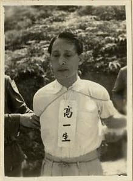

繫上歷史的黃絲帶 從林義雄禁語抗議回顧那個噤聲的年代
戰後台灣的白色恐怖，一般以1949年5月19日戒嚴令發布為始，以1987年7月15日解嚴，或以1992年刑法100條的修正告終。1949年與1950年，國民黨把持的立法院分別通過了《懲治叛亂條例》與《動員戡亂時期檢肅匪諜條例》，據此，情治單位得以任意限縮人民的言論自由，壓制任何反對國民黨政權的政治活動。從1950年代的中共地下組織案，到1960年代以來的台獨相關案件，任何站在國民黨政權對立面的政治主張，都是國家機器的敵人。除此之外，情治機構系統性地製造了大量的冤、假、錯、案，逮捕、殺戮了許多無辜人民。根據現有的統計資料，白色恐怖期間有一萬六千多名的政治受難者，其中一千多人遭到槍決。每一筆數字背後，都是一個個破碎的家庭，無數個煎熬悲痛的日子。

二二八事件後的台灣，瀰漫著恐怖消沈的氣息。然而，目睹國民黨政權殘忍作為的青年志士，紛紛投身於更為激進的改造運動。一條名為地下革命的新戰線，悄悄在島嶼各處蔓延滋生。台籍的中國共產黨員蔡孝乾、張志忠等人，擔負起中共「台灣省工作委員會」的發展工作。短短數年之間，地下組織吸納了日治時代的社會運動者與新一代的台灣青年。時任基隆中學校長的客家人鍾浩東，領導了基隆地區的地下活動。校園內的許多老師、學生，也加入了鍾校長的反抗隊伍。1949年8月起，鍾浩東等人陸續被捕。最後，共有九位教師遭到槍決，多位學生判處感訓與有期徒刑。基隆中學事件，預告了1950年代白色恐怖的到來。
台北石碇、汐止交界的鹿窟、白雲山區，位於台北市區東南角，群山環繞，山徑複雜。二二八事件後，台北地區參與抗爭的中共地下黨員，透過老家在鹿窟的陳春慶的引介，陸續上山躲藏。當地的居民，並不排斥來自城市的陌生人。相反的，經過一段時間的相處，他們逐漸成為地下組織的協力者與成員。村長、鄉公所職員、地方角頭，一般的農民、礦工，紛紛參與其中。1949年9月，上級幹部決議，將鹿窟指定為台灣北部的武裝基地。鹿窟基地的保密工作非常健全，1950年開始的肅清，並未發現此一據點。直到1952年12月，官方才知悉鹿窟基地的存在，隨即發動上萬名軍警包圍山區，大肆搜捕相關人員。共計有35人遭到槍決，98人判處有期徒刑，上百人自首自新。經此打擊，鹿窟、玉桂嶺等村落，幾乎全村散離。
吾雍．雅達烏猶卡那，鄒族人，漢名高一生，阿里山鄉鄉長；巴斯勇‧優路拿納，鄒族人，漢名湯守仁，嘉義縣參議員；樂信．瓦旦，泰雅族人，漢名林瑞昌，台灣省參議員，他們是阿里山鄒族與桃園角板山泰雅族的部落菁英。
1950年前後，由日治時代社會運動者簡吉所領導，隸屬於於台灣省工作委員會的「山地工作委員會」，在高山部落尋求可靠的盟友。當時，中共的少數民族自治政策，與部落尋求原住民自決自治的關懷不謀而合，雙方建立了相當程度的結盟關係。因此，1950年代的阿里山，遂成為北部地下黨員南下躲避的重要據點之一。
1952年，部落菁英與部分山地青年陸續被捕，三人於1954年4月17日槍決。往後的原住民部落，未再形成跨部落的政治力量。一直要等到三十多年後，台灣的原住民運動，才重新喚醒這個早已夭折的自決之夢。
1950年前後，由日治時代社會運動者簡吉所領導，隸屬於於台灣省工作委員會的「山地工作委員會」，在高山部落尋求可靠的盟友。當時，中共的少數民族自治政策，與部落尋求原住民自決自治的關懷不謀而合，雙方建立了相當程度的結盟關係。因此，1950年代的阿里山，遂成為北部地下黨員南下躲避的重要據點之一。
1952年，部落菁英與部分山地青年陸續被捕，三人於1954年4月17日槍決。往後的原住民部落，未再形成跨部落的政治力量。一直要等到三十多年後，台灣的原住民運動，才重新喚醒這個早已夭折的自決之夢。

1963年，在台大就讀的美籍留學生狄仁華撰寫的〈人情味與公德心〉一文，刊載在中央日報上，激起了青年學生反省社會風氣的浪潮。以台大為發動點，「青年自覺運動」漸次擴展到大專院校與各級中學。青年學生實踐各種社會服務，身體力行改造社會。來自雲林北港的許席圖，就讀政大法律系期間，曾擔任政大代聯會的總幹事，1966年當選「青年自覺運動推行會」主席，不久後即畢業服役。退役後的許席圖，為籌措自覺會的經費，成立了「統一事業基金會」來募資。與此同時，救國團亦透過管道，希望自覺會能停止運作。1969年2月，國民黨逮捕許席圖等人。許席圖遭受劇烈刑求後精神失常，1977年轉送往花蓮玉里療養院至今。
位於台東東河山上的泰源監獄，自1962年起，開始關押來自綠島新生訓導處、新店安坑軍人監獄、台北軍法的政治犯。除了1950年代中共地下組織案件的受刑人，1960年代興起的台獨案件政治犯，也加入了政治犯的大家庭。然而，從台北軍法處看守所移送至泰源的鄭金河等人，正在醞釀一場熾熱的風暴。
1966年開始，他們在獄中秘密籌劃武裝革命，企圖推翻國民黨政權。1970年2月8日，鄭金河等人取刀起事，刺傷了帶領衛兵交班的士官長。但因老士官長的呼救而失敗。一行六人棄械逃亡，逃往台東山區，十數日後全數被捕。三個月後，鄭金河等五人遭到槍決。
中壢事件的主角，是自幼即以當總統為終身志願的許信良，他是國民黨極力栽培的青年領袖。1969年從英國留學歸來後，許信良加入《大學雜誌》的行列，開始批評時政。儘管如此，他仍獲得國民黨的提名，並順利當選1973年的台灣省議員。1977年，許信良批評國民黨的火力大開，除出版書籍外，更自行參選桃園縣長。
11月19日，桃園縣長投票日當天，憤怒的群眾包圍中壢分局，群眾與警方爆發激烈衝突，抗議中壢國小投開票所監選主任的做票行為。中壢事件的抗爭，迫使桃園縣所有投開票所重新開票，許信良以九萬票之差，大勝國民黨提名的歐憲瑜。這是自1947年的二二八事件以來，首次的大規模群眾示威活動。
此舉提振了黨外人士的士氣，也稍稍遏止了國民黨的做票歪風。兩年後，許信良參與了聲援余登發的遊行遭到「休職」，美麗島事件期間，人在國外的他，從此成為海外黑名單人士，直到1989年才偷渡回台灣。
出身宜蘭五結工人家庭的林義雄，早年是一名為扶助貧民弱勢的律師。然而，1975年，宜蘭黨外前輩郭雨新的選舉訴訟，開啟了林義雄的政治生涯。1977年，林義雄以第一高票當選台灣省議員。認真犀利問政的他，很快成為受人矚目的黨外人士。1979年世界人權日的大遊行，林義雄並未參與其中，卻仍遭逮捕。
林義雄等人被捕後，為監控黨外人士的動態，特務機構仍舊全天候地監控林義雄等人的住家。豈料，隔年1980年的2月28日，林妻方素敏前往新店安坑軍人監獄探監時，兇手闖入林義雄台北市信義路的住處，持刀殺害了林母林游阿妹及雙胞胎女兒亮均、亭均，身中六刀的長女奐均，急救後逃過死劫。當時國民黨政權暗示兇手為台獨份子或中共人士，並循此方向偵辦。大多數人仍認為，此為國民黨主導之兇殺案，意在殺雞儆猴，恫嚇黨外人士。至今，林宅血案已成歷史懸案。
陳文成出生於1950年，當時的台灣也正被白色恐怖氛圍所籠罩。求學過程一帆風順的他，在完成台大數學系學業後，於1975年前往美國密西根大學攻讀統計學博士，三年後取得統計學博士，在卡內基美隆大學統計系擔任助理教授。
當時台灣一波又一波追求民主化的反對運動，也撼動了遠在海外的陳文成。因此，陳文成參與編編寫全美台灣同鄉會《安雅堡鄉訊》，更創立「民主推動基金」，替美麗島雜誌募款。但這些行為，卻也為國民黨的海外校園間諜（領取國民黨酬勞的職業學生）所掌握。
1981年5月，陳文成返台時，即兩度遭到警備總部約談，更於7月2日第二次約談後，行蹤成謎，隔日早晨被發現陳屍於台大校園。各項證據均顯示，陳文成應是他人謀殺致死。這也使得國民黨猖獗的校園間諜和恣意押人問案的情治機構，受到國際社會的高度關注。
資料來源：
清楚來源標示的格式建議採用註腳的方式呈現，為標明資料來源、文章補充注解的一種方法。一般註腳會在文章內以符號或數字標示。